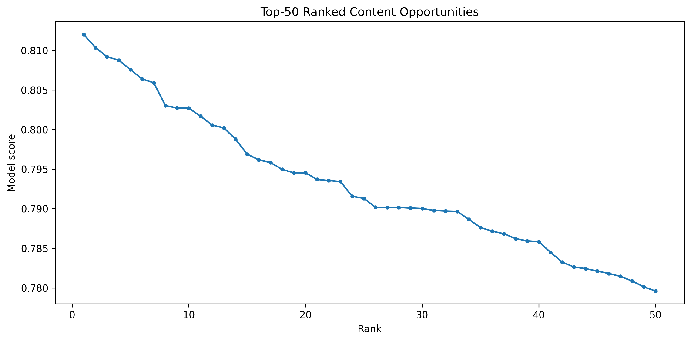

Abstract
This study investigates whether a machine-learning ranking model can help prioritize content pages associated with an observed decline signal for human content review.
The analysis uses an anonymized content-refresh dataset containing 22,301 page-level observations available for validation and seven measurable features covering search performance, content age, and engagement signals. A Random Forest classifier is trained using a client-grouped holdout with 25 training clients and 7 test clients, with zero client overlap, and is compared with the Week-4 baseline using Precision@50.
On the evaluated holdout, the Random Forest achieved a Precision@50 of 0.84 compared with 0.70 for the baseline, providing directional evidence that combining multiple page-level signals can improve prioritization of pages matching the observed decline proxy.
Problem framing
It is “which pages should an editor look at first for a possible content refresh?”
Content teams can have many pages to review, but limited editorial time and resources. Reviewing every page equally makes it difficult to identify which pages should receive attention first.
This project asks whether observable search-performance, content-age, and engagement signals can be combined to rank content pages associated with an observed decline signal. The decision supported by the analysis is therefore which pages an editor should review first, rather than whether a page should automatically be refreshed.
The unit of analysis is an individual content-page observation. The output is a machine-learning score and ranked action queue, with higher-scoring pages receiving higher review priority. A human editor or content analyst can use this ranking to focus attention on higher-priority pages while still checking search intent, content quality, seasonality, business context, and other factors before taking action.
The cost of a wrong call works in both directions: prioritizing a low-value page can waste limited editorial resources, while failing to prioritize a useful opportunity can delay potential content improvements. Machine learning helps by combining 7 observable page-level signals into a consistent ranking score rather than relying on a single performance metric.
Data safety
Data
The model works with observable search-performance, engagement, content-age, and content-related signals.
The analysis uses the anonymized FlyRank content-refresh dataset provided for the internship capstone: data/raw/content_refresh_anonymized.csv. The supplied file contains 30,000 content items and 44 columns.
The analysis contains 22,301 page-level observations available for validation. The dataset provides measurable signals related to search performance, content characteristics, and engagement.
Final model features
impressions_90dObserved search impressions over the 90-day window.
sessions_90dObserved sessions over the 90-day window.
content_age_daysAge of the content item in days.
ctrObserved click-through rate.
avg_positionAverage observed search position.
word_countObserved content length measured by word count.
engagement_rateObserved engagement rate for the content item.
Excluded fields & leakage control
Trend fields
trend_direction and trend_pct are excluded because trend_direction is used to derive the target label. Including these fields as model features would leak information about the observed decline signal into the model.
Identifiers
client_id is retained only for client-grouped train/test splitting and leakage checks and is never used as a predictive feature. content_id is retained only to identify observations in the ranked output.
Public-safety note
The analysis does not use client names, domains, page URLs, private search queries, credentials, or other client-identifying information. The work is designed to use anonymized and public-safe information only, with pseudonymous identifiers restricted to grouping or output identification rather than prediction.
Baseline
The baseline is a transparent CTR-position opportunity score developed in Week 4. It prioritizes pages with meaningful search exposure whose observed CTR is below the typical CTR for pages in a similar average-position bucket.
Pages are first divided into four position buckets using avg_position: Top 3 (0–3), Page 1 (3–10), Page 2 (10–20), and Deep (>20). For each bucket, the expected CTR is calculated as the median CTR of the training pages in that bucket.
Pages are then ranked in descending order of the baseline score. The log(1 + impressions_90d) term gives greater weight to pages with meaningful search exposure while reducing the influence of extremely large impression values.
Why this is a fair comparison
The baseline provides a transparent, rule-based benchmark against which the Random Forest can be compared. It does not use a trained machine-learning model and instead relies on a simple combination of position-adjusted CTR opportunity and search exposure.
For a fair comparison, the baseline and Random Forest are evaluated on the same client-grouped held-out test set and using the same evaluation metric, Precision@50. The expected CTR values used by the baseline are calculated from the training data only, preventing information from the held-out test clients from influencing the baseline.
Baseline result
Week-4 baseline
0.70
Precision@50 · 35 of the top 50 baseline-ranked pages matched the observed decline proxy.
Random Forest
0.84
Precision@50 · 42 of the top 50 ranked pages matched the observed decline proxy.
The baseline therefore serves as a transparent reference point for measuring whether the multi-feature Random Forest provides stronger prioritization than the original rule-based approach.
Model / analysis
The method used for this analysis is a Random Forest classifier, selected for Lane 2: Refresh / Content Opportunity Scoring. The objective is to combine multiple observable page-level signals into a ranking score that can help prioritize content pages for human review.
A Random Forest fits this lane because the available signals can interact in non-linear ways. For example, impressions, sessions, CTR, average position, content age, word count, and engagement may provide different information about whether a page is associated with the observed decline proxy. The model can combine these signals into a probability score without requiring a manually specified linear relationship between them.
Target / proxy definition
is_declining_label = 1 when trend_direction is "down", and 0 otherwise, representing an observed decline state in the available dataset rather than a guaranteed future decline.Final model features
impressions_90d, sessions_90d, content_age_days, ctr, avg_position, word_count, and engagement_rate.
Validation and training
The model is evaluated using a client-grouped train/test split, ensuring that the same client does not appear in both training and test data. The validation audit confirmed 25 training clients and 7 test clients, with zero client overlap.
Missing numeric values are filled using medians calculated from the training data only. The model then ranks held-out pages using the predicted probability of the positive observed-decline proxy.
Random Forest configuration
n_estimators = 200max_depth = 12min_samples_leaf = 5class_weight = "balanced"random_state = 42
Intended use
The model is intended as a decision-support ranking system, not an automated refresh decision. Its purpose is to help an editor or content analyst decide where to look first when reviewing a large number of pages.
Baseline comparison result
The improvement from 0.70 to 0.84 is an observed improvement of 0.14 Precision@50, or 7 additional matching pages within the top-50 review queue on this held-out split.
This result provides evidence that, on this particular client-grouped evaluation, combining the seven observable signals produced a stronger ranking of pages matching the observed decline proxy than the transparent rule-based baseline. It does not prove that the model will perform identically for every client, predict future decline with certainty, or establish that refreshing a highly ranked page will improve its future performance.
Evaluation
The evaluation uses a client-grouped train/test split because pages from the same client can share patterns. Keeping all observations from a client in the same split reduces the risk that the model learns client-specific patterns that would make the test set artificially easy.
The available validation data contains 22,301 page-level observations. The split contains 25 clients in the training set and 7 clients in the held-out test set, with zero client overlap between the two groups.
Evaluation metric
A higher Precision@50 means that more of the pages placed at the top of the review queue match the observed decline signal.
Model versus baseline
| Method | Precision@50 | Positive pages in top 50 |
|---|---|---|
| Week-4 baseline | 0.70 | 35 / 50 |
| Random Forest | 0.84 | 42 / 50 |
The Random Forest therefore shows an absolute improvement of 0.14 Precision@50 over the baseline, corresponding to 7 additional matching pages among the top 50 on this held-out evaluation.
Error analysis
The remaining pages in the top-50 model ranking that do not match the observed decline proxy represent false positives. These pages would receive high review priority even though they are not labeled as declining in the evaluation data. Such cases are important because they may consume editorial review capacity.
False negatives are declining-proxy pages that receive lower model scores and therefore do not appear near the top of the review queue. These cases represent missed opportunities for prioritization.
The model's feature-importance analysis is used to inspect which observable signals contributed most to the Random Forest's decisions. These importances are interpreted as model behavior rather than causal effects. A feature receiving high importance does not mean that changing that feature will cause a page to recover.
Evaluation conclusion
The evaluation does not establish that the model predicts guaranteed future decline or that refreshing a highly ranked page will improve its performance. Its appropriate role is therefore decision support for prioritizing human editorial review.
Interpretation
The Random Forest indicates that the observed decline proxy is associated with a combination of page-level search, content, and engagement signals, rather than a single measurable factor. This supports the use of a multi-feature ranking model instead of relying only on the CTR-position opportunity used by the baseline.
The model considers seven observable features: impressions_90d, sessions_90d, content_age_days, ctr, avg_position, word_count, and engagement_rate. Their feature importances provide an interpretation of which signals the model relied on when separating pages associated with the observed decline proxy.
Relationship to the baseline
One useful finding is that the Random Forest performs better than the transparent CTR-position baseline on the held-out client-grouped split. The baseline focuses primarily on whether observed CTR is below the typical CTR for a page's position bucket, while the Random Forest can consider CTR together with impressions, sessions, content age, content length, position, and engagement.
The improvement from 0.70 to 0.84 Precision@50 suggests that the additional observable signals contain useful information for ranking pages that match the observed decline proxy. This does not mean that every individual feature is independently predictive or that all seven features are equally important.
Error patterns and surprises
The model still produces both false positives and false negatives. Some pages receive high model scores without matching the decline proxy, while some pages associated with the proxy receive lower scores and are therefore not prioritized near the top of the queue.
Another important limitation is that the target represents an observed decline state derived from trend_direction, not a measured causal outcome of refreshing content. The analysis cannot determine whether a recommended refresh would subsequently improve traffic, CTR, rankings, or engagement.
Negative results / what the model does not show
Causation
The analysis does not establish that any individual feature causes content decline.
Guarantee
A page with a high score is not guaranteed to decline.
Refresh outcome
Refreshing a highly ranked page is not shown to improve its performance.
Generalization
The model is not established to perform identically for unseen clients outside this evaluation.
Google algorithm
The model has not been shown to learn or predict Google's ranking algorithm.
Recommendation
Ranked editorial actions
The model output is designed to support a practical editorial review workflow. Rather than automatically deciding which pages require a refresh, the Random Forest produces a ranked score that helps editors prioritize which content-page observations should be reviewed first.
The highest-ranked pages receive the greatest review priority. An editor can then examine the page's search exposure, sessions, CTR, average position, content age, word count, engagement, and other contextual information before deciding whether an editorial action is appropriate.
Ranked review queue
The Random Forest produces a ranked review queue based on the model score. The top 50 observations have model scores ranging from approximately 0.780 to 0.812, providing a clear ordering of higher-priority observations.

The ranking is intended to determine review priority, not to guarantee that a page requires a refresh. Higher-ranked pages should therefore be investigated first, while still being evaluated using editorial judgment and additional context.
Model score distribution
The model generates a continuous score across the evaluated observations rather than a simple yes/no decision.

This continuous score allows the editorial team to prioritize limited review capacity. The score should be interpreted as a ranking signal associated with the observed decline proxy, rather than as a guaranteed probability that a page will decline or that a refresh will succeed.
Action playbook
REVIEW_FOR_REFRESH
Prioritize the page for human review and investigate whether a content refresh is justified.
MONITOR
Continue observing the page and consider additional evidence before taking action.
HOLD
Do not prioritize the page for immediate editorial intervention based on the model output alone.
HOLD
1,406 · 50.0%
MONITOR
844 · 30.0%
REVIEW_FOR_REFRESH
562 · 20.0%

How an editor could use the output
01 · Start
Start with the highest-ranked pages and review pages with the strongest model scores first.
02 · Reason
Use the reason code associated with the recommendation to understand why the observation entered the queue.
03 · Validate
Check search intent, content quality, current search conditions, seasonality, relevance, and other factors not fully represented by the seven model features.
04 · Decide & track
The editor can decide whether the page should actually be refreshed, monitored, or left unchanged, then track the decision and outcome for future assessment.
Confidence and limitations
The main evidence supporting this recommendation is the held-out client-grouped evaluation, where the Random Forest achieved a Precision@50 of 0.84, compared with 0.70 for the Week-4 baseline. This indicates that the model provided a stronger ranking signal for pages matching the observed decline proxy on the evaluated holdout.
However, this result should be treated as directional evidence rather than a guarantee of future performance. The model can produce false positives and false negatives, and the observed decline proxy does not establish that a page will decline in the future.
Reproducibility
The complete analysis can be re-run from a fresh clone of the project repository. The repository contains the capstone notebook, anonymized dataset, model configuration, generated figures, and final ranked action-playbook output.
git clone https://github.com/AnshGarg13622/FlyRank_Internship.git
cd FlyRank_Internship
pip install pandas numpy scikit-learn matplotlib seaborn jupyterMain analysis
work/notebooks/capstone.ipynb
Dataset
data/raw/content_refresh_anonymized.csv
Ranked queue
work/capstone_outputs/action_playbook_queue.csv
Generated figures
work/figures/top50_model_ranking.pngwork/figures/model_score_distribution.pngwork/figures/action_distribution.png
The client-grouped train/test split uses random_state=42. The final evaluation contains 25 training clients and 7 held-out test clients, with zero client overlap. The Random Forest uses n_estimators=200, max_depth=12, min_samples_leaf=5, class_weight="balanced", random_state=42, and n_jobs=-1.
The seven predictive features are impressions_90d, sessions_90d, content_age_days, ctr, avg_position, word_count, and engagement_rate. Missing numeric values are handled using training-set medians only.
The Random Forest and Week-4 baseline are evaluated on the same held-out client-grouped test set using Precision@50. The Random Forest achieved a Precision@50 of 0.84, while the baseline achieved 0.70.
The client-grouped holdout is reproducible using the documented split procedure and fixed random seed. The project does not claim a permanently sealed or independently audited “evaluated once, blind” benchmark. The reported result should therefore be interpreted as evidence from the specified held-out client evaluation, and performance may change with different data snapshots, clients, features, or future evaluation periods.
Acknowledgments & data credit
This work was Built on the FlyRank ML Internship dataset. The dataset was used for educational and research-oriented analysis of content-refresh prioritization, with all reported results presented in an anonymized and public-safe form.